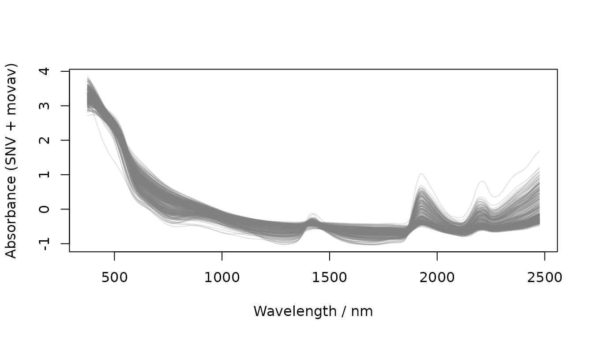
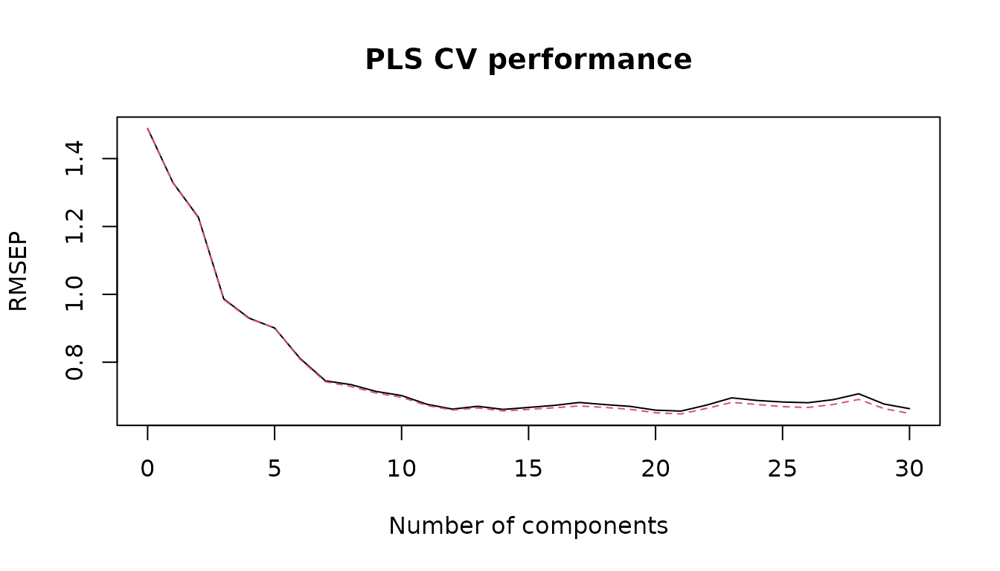

This vignette mirrors the main package example (see
README) and compares a PLS baseline to
soilVAE on the included dataset
datsoilspc.
CRAN/CI note: this vignette is written to build on systems without Python/TensorFlow.
The VAE training chunks are automatically skipped unless TensorFlow/Keras are available.
Packages
# IMPORTANT: do NOT use devtools in vignettes (it is not available on CRAN/CI runners).
# Only load packages that are in Imports/Suggests.
for (p in c("prospectr", "pls", "reticulate", "soilVAE")) {
if (!requireNamespace(p, quietly = TRUE)) {
stop("Package '", p, "' is required to build this vignette. ",
"Please install it (it should be installed automatically from Suggests/Imports during checks).")
}
}
library(prospectr)
library(pls)
library(reticulate)
library(soilVAE)Data
data("datsoilspc", package = "soilVAE")
str(datsoilspc, max.level = 1)
#> 'data.frame': 391 obs. of 5 variables:
#> $ clay : num 49 7 56 14 53 24 9 18 33 27 ...
#> $ silt : num 10 24 17 19 7 21 9 20 13 19 ...
#> $ sand : num 42 69 27 67 40 55 83 61 54 55 ...
#> $ TotalCarbon: num 0.15 0.12 0.17 1.06 0.69 2.76 0.66 1.36 0.19 0.16 ...
#> $ spc : num [1:391, 1:2151] 0.0898 0.1677 0.0778 0.0958 0.0359 ...
#> ..- attr(*, "dimnames")=List of 2
#> - attr(*, "na.action")= 'omit' Named int 392
#> ..- attr(*, "names")= chr "63"Utility: evaluation metrics (base R)
eval_quant <- function(y, yhat) {
y <- as.numeric(y); yhat <- as.numeric(yhat)
ok <- is.finite(y) & is.finite(yhat)
y <- y[ok]; yhat <- yhat[ok]
if (length(y) < 3) {
return(list(n = length(y), ME = NA_real_, MAE = NA_real_, RMSE = NA_real_,
R2 = NA_real_, RPIQ = NA_real_, RPD = NA_real_))
}
err <- yhat - y
me <- mean(err)
mae <- mean(abs(err))
rmse <- sqrt(mean(err^2))
ss_res <- sum((y - yhat)^2)
ss_tot <- sum((y - mean(y))^2)
r2 <- if (ss_tot == 0) NA_real_ else 1 - ss_res / ss_tot
rpiq <- stats::IQR(y) / rmse
rpd <- stats::sd(y) / rmse
list(n = length(y), ME = me, MAE = mae, RMSE = rmse, R2 = r2, RPIQ = rpiq, RPD = rpd)
}
as_df_metrics <- function(x) {
data.frame(
n = x$n,
ME = round(x$ME, 2),
MAE = round(x$MAE, 2),
RMSE = round(x$RMSE, 2),
R2 = round(x$R2, 2),
RPIQ = round(x$RPIQ, 2),
RPD = round(x$RPD, 2),
stringsAsFactors = FALSE
)
}Spectra preprocessing (reflectance → absorbance → resample → SNV → movav)
# Reflectance → absorbance
spcA <- log(1 / as.matrix(datsoilspc$spc))
# Resample to 5 nm
oldWavs <- as.numeric(colnames(spcA))
newWavs <- seq(min(oldWavs), max(oldWavs), by = 5)
spcARs <- prospectr::resample(
X = spcA,
wav = oldWavs,
new.wav = newWavs,
interpol = "linear"
)
# SNV + moving average
spcASnv <- prospectr::standardNormalVariate(spcARs)
spcAMovav <- prospectr::movav(spcASnv, w = 11)
# Store in object to match book-style workflows
datsoilspc$spcAMovav <- spcAMovav
matplot(
x = as.numeric(colnames(datsoilspc$spcAMovav)),
y = t(datsoilspc$spcAMovav),
xlab = "Wavelength / nm",
ylab = "Absorbance (SNV + movav)",
type = "l", lty = 1,
col = rgb(0.5, 0.5, 0.5, alpha = 0.25)
)

Preprocessed spectra (SNV + movav)
Baseline: PLS (train on datC, evaluate on datV)
maxc <- 30
pls_fit <- pls::plsr(
TotalCarbon ~ spcAMovav,
data = datC,
method = "oscorespls",
ncomp = maxc,
validation = "CV"
)
plot(pls_fit, "val", main = "PLS CV performance", xlab = "Number of components")

PLS CV performance
nc <- 14
pls_pred_C <- as.numeric(predict(pls_fit, ncomp = nc, newdata = datC$spcAMovav))
pls_pred_V <- as.numeric(predict(pls_fit, ncomp = nc, newdata = datV$spcAMovav))
pls_cal <- eval_quant(datC$TotalCarbon, pls_pred_C)
pls_tst <- eval_quant(datV$TotalCarbon, pls_pred_V)
rbind(
cbind(Model = "PLS", Split = "Calibration (datC)", as_df_metrics(pls_cal)),
cbind(Model = "PLS", Split = "TEST (datV)", as_df_metrics(pls_tst))
)
#> Model Split n ME MAE RMSE R2 RPIQ RPD
#> 1 PLS Calibration (datC) 293 0.00 0.37 0.56 0.86 2.04 2.63
#> 2 PLS TEST (datV) 98 0.02 0.36 0.52 0.69 2.34 1.81soilVAE: supervised VAE regression (skips automatically if TF/Keras unavailable)
has_py <- reticulate::py_available(initialize = FALSE)
has_tf <- FALSE
if (has_py) {
try(reticulate::py_config(), silent = TRUE)
has_tf <- reticulate::py_module_available("tensorflow") &&
reticulate::py_module_available("keras")
}
has_py
#> [1] FALSE
has_tf
#> [1] FALSEPrepare matrices (scale X using train stats; keep y in original units)
# Predictors
X_tr <- scale(as.matrix(datC$spcAMovav))
X_center <- attr(X_tr, "scaled:center")
X_scale <- attr(X_tr, "scaled:scale")
X_te <- scale(as.matrix(datV$spcAMovav), center = X_center, scale = X_scale)
# Target (no transform, keep original units like the PLS baseline)
y_tr <- as.numeric(datC$TotalCarbon)
y_te <- as.numeric(datV$TotalCarbon)
dim(X_tr)
#> [1] 293 421
length(y_tr)
#> [1] 293Fit and evaluate (only runs when TF/Keras is available)
# If needed, pin an env *before* importing TF/Keras:
# soilVAE::vae_configure(conda = "soilvae-tf")
# Internal split from datC -> train/val for early stopping + model selection
set.seed(19101991)
idx <- seq_len(nrow(X_tr))
val_id <- sample(idx, size = max(1L, round(0.20 * length(idx))))
tr_id <- setdiff(idx, val_id)
X_int_tr <- X_tr[tr_id, , drop = FALSE]
y_int_tr <- y_tr[tr_id]
X_int_va <- X_tr[val_id, , drop = FALSE]
y_int_va <- y_tr[val_id]
# A small-but-useful grid
grid_vae <- data.frame(
latent_dim = c(8L, 16L, 32L, 64L),
dropout = c(0.2, 0.3),
lr = c(5e-4),
beta_kl = c(0.01),
alpha_y = c(5),
epochs = c(500L),
batch_size = c(64L, 128L),
patience = c(50L),
stringsAsFactors = FALSE
)
grid_vae$hidden_enc <- list(c(512L, 256L, 128L))
grid_vae$hidden_dec <- list(c(128L, 256L, 512L))
tuned <- soilVAE::tune_vae_train_val(
X_tr = X_int_tr, y_tr = y_int_tr,
X_va = X_int_va, y_va = y_int_va,
seed = 19101991,
grid_vae = grid_vae
)
best <- soilVAE::select_best_from_grid(tuned$tuning_df, selection_metric = "euclid")
cfg <- best$best
m <- soilVAE::vae_build(
input_dim = ncol(X_tr),
hidden_enc = as.integer(strsplit(cfg$hidden_enc_str, "-")[[1]]),
hidden_dec = as.integer(strsplit(cfg$hidden_dec_str, "-")[[1]]),
latent_dim = as.integer(cfg$latent_dim),
dropout = as.numeric(cfg$dropout),
lr = as.numeric(cfg$lr),
beta_kl = as.numeric(cfg$beta_kl),
alpha_y = as.numeric(cfg$alpha_y)
)
soilVAE::vae_fit(
model = m,
X = X_int_tr, y = y_int_tr,
X_val = X_int_va, y_val = y_int_va,
epochs = as.integer(cfg$epochs),
batch_size = as.integer(cfg$batch_size),
patience = as.integer(cfg$patience),
verbose = 0L
)
# Predict on: internal train, internal val, and external TEST (datV)
yhat_int_tr <- soilVAE::vae_predict(m, X_int_tr)
yhat_int_va <- soilVAE::vae_predict(m, X_int_va)
yhat_te <- soilVAE::vae_predict(m, X_te)
vae_tr <- eval_quant(y_int_tr, yhat_int_tr)
vae_va <- eval_quant(y_int_va, yhat_int_va)
vae_te <- eval_quant(y_te, yhat_te)
rbind(
cbind(Model = "soilVAE", Split = "Train (internal)", as_df_metrics(vae_tr)),
cbind(Model = "soilVAE", Split = "Val (internal)", as_df_metrics(vae_va)),
cbind(Model = "soilVAE", Split = "TEST (datV)", as_df_metrics(vae_te))
)Final comparison table (PLS vs soilVAE)
tab <- rbind(
cbind(Model = "PLS", Split = "Calibration (datC)", as_df_metrics(pls_cal)),
cbind(Model = "PLS", Split = "TEST (datV)", as_df_metrics(pls_tst)),
cbind(Model = "soilVAE",Split = "Train (internal)", as_df_metrics(vae_tr)),
cbind(Model = "soilVAE",Split = "Val (internal)", as_df_metrics(vae_va)),
cbind(Model = "soilVAE",Split = "TEST (datV)", as_df_metrics(vae_te))
)
row.names(tab) <- NULL
tab